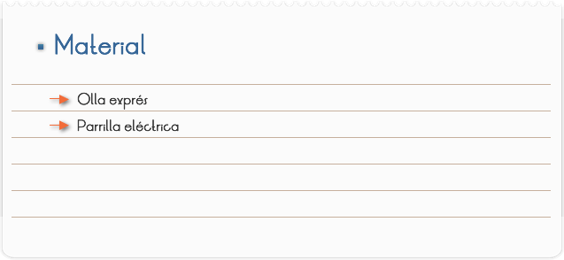

Introducción
La olla a presión es un recipiente hermético para cocinar que no permite la salida de aire o líquido por debajo de una presión establecida. Debido a que el punto de ebullición del agua aumenta cuando se incrementa la presión, la presión dentro de la olla permite subir la temperatura de ebullición por encima de 100 °C (212 °F). La temperatura más alta hace que los alimentos se cocinen más rápidamente llegando a dividirse los tiempos de cocción tradicionales por tres o cuatro. Por ejemplo, un repollo se cocina en un minuto, las judías verdes en cinco, las patatas pequeñas y medianas (hasta 200 g) pueden tardar unos cinco minutos y un pollo completo no más de veinticinco. Generalmente, se utiliza para conseguir en un corto periodo de tiempo los mismos efectos de estofado o de la cocción a fuego lento.
Objetivo
Observar y entender como funciona la olla exprés, así como el papel que juega la presión de un gas cuándo aumenta la temperatura.

1. Observa cuidadosamente como está formada la tapa de la olla exprés.
2. Ahora coloca medio litro de agua, tapa la olla y colócala en la parrilla, espera a que empiece a salir el vapor y observa cuidadosamente.
Comentarios
Una válvula libera el vapor cuando la presión llega al límite establecido; normalmente, la presión levanta un tope permitiendo que el vapor escape. Existe una válvula de seguridad tarada a una presión superior a la de funcionamiento. Si la temperatura interna (y por tanto, la presión) es demasiado alta, funcionaría esta válvula, dejando escapar la presión. No es raro que ocurra puesto que ciertos alimentos tienen hojas que pueden obstruir el orificio de salida de la válvula.
Pues es sencillo, el agua hierve a 100º C es lo que se estima pero no es cierto del todo depende de muchas cosas, una de ellas es la presión, es decir el agua hierve a100º C a nivel del mar, en lo alto de una montaña, pongamos el Everest esa temperatura de ebullición puede ser de 70ºC no lo se cierto, es una estimación mía. Esto ocurre por la presión, al nivel del mar la presión es mayor que en la cima del Everest. Si pusiéramos agua en un recipiente cerrado y con una bomba de vacío sacáramos en aire del interior, ocurriría que el agua herviría sin necesidad de fuego esto es por la falta de presión atmosférica.
Pues bien, una olla exprés, basa su funcionamiento en este principio. Es un recipiente de acero cerrado herméticamente para evitar la salida del vapor. Excepto por la válvula que controlará que la presión no sea tan alta como para romper la olla o soltar su tapadera. Cuando ponemos la olla en el fuego con los alimentos y agua, al iniciar la ebullición del agua se produce vapor que no tiene salida hasta alcanzar cierta presión, esta presión es más elevada que la atmosférica con lo que el punto de ebullición en la olla aumenta conforme aumenta la presión. El hecho de que el punto de ebullición sea más alto, hace que la temperatura en el interior de la olla también sea más alta, con lo que cocinamos los alimentos a una temperatura más alta. Esto reduce el tiempo de cocción considerablemente a la vez que ahorramos combustible en la cocina, especialmente en platos que necesitan varias horas para ser cocinados en condiciones de presión normales.